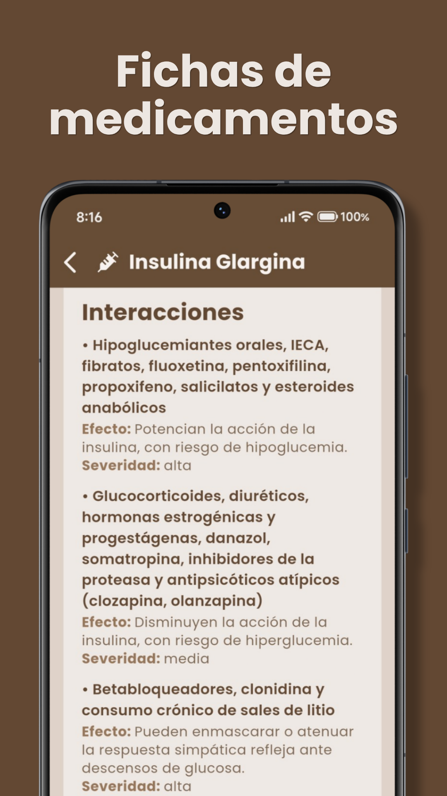
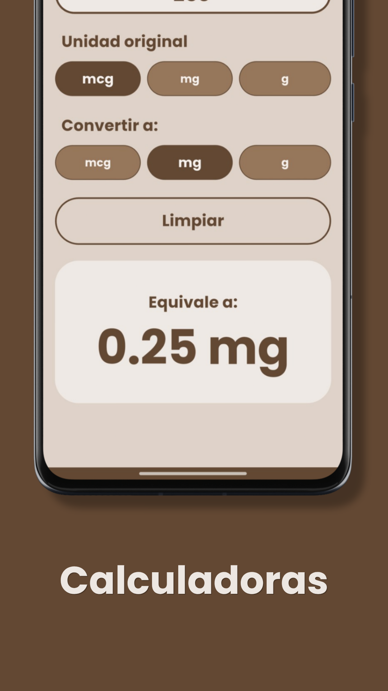
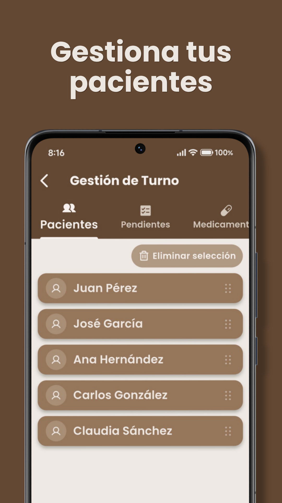
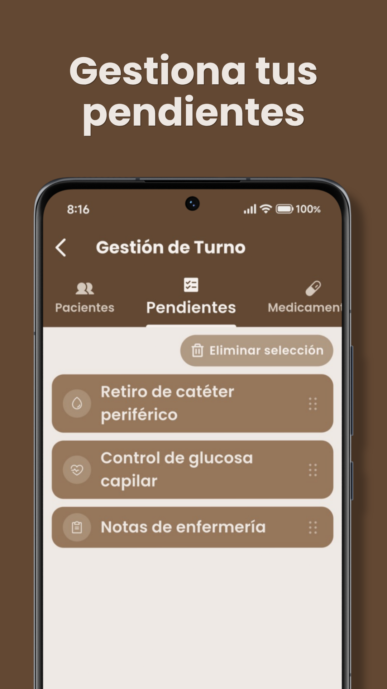
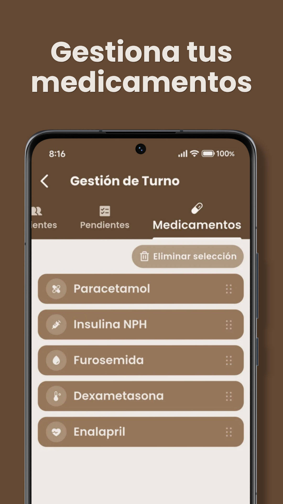
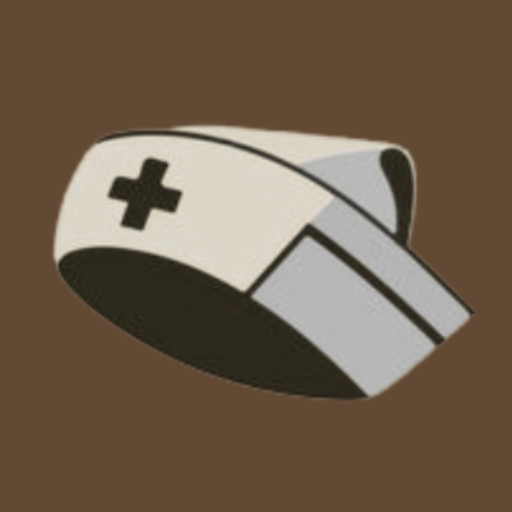
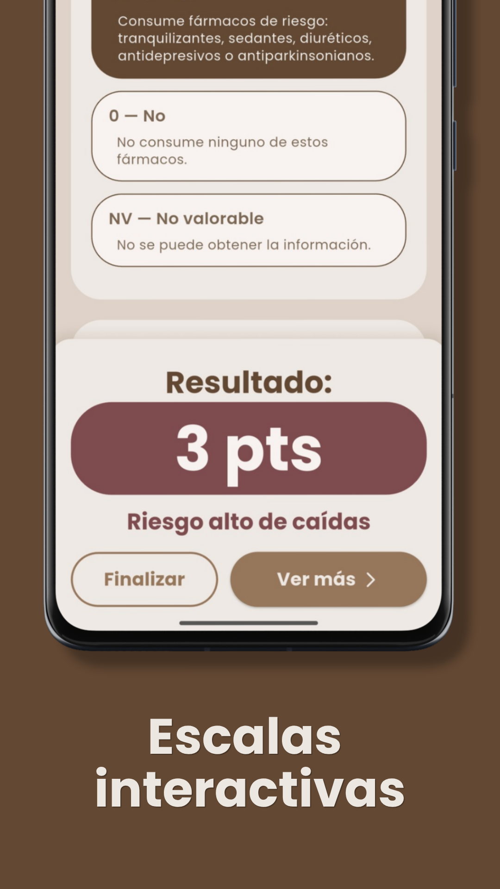

Así se ve Nurska
Una interfaz cálida y clara, diseñada para consultarse rápido durante el turno.







Desliza para ver más →

Escalas, calculadoras, farmacología y normas: para profesionales y estudiantes de enfermería.

Herramientas pensadas para la práctica diaria de enfermería, listas para consultar sin conexión.
Braden, Downton, Glasgow, EVNA y más! + cálculo automático de puntaje e interpretación del riesgo.
Dosis, goteo, superficie corporal y conversiones: Resultados rápidos y confiables.
Fichas de medicamentos: indicaciones, vías, contraindicaciones, efectos e interacciones organizadas por categoría.
Consulta las NOM y referencias clínicas relevantes para la práctica de enfermería en México, siempre disponibles.
Organiza pacientes, pendientes y medicamentos de tu jornada en un solo lugar.
Una interfaz cálida y clara, diseñada para consultarse rápido durante el turno.





Desliza para ver más →
Nurska se instala directamente desde este sitio. Solo toma un minuto.
Toca el botón "Descargar APK". El archivo se guardará en tu carpeta de Descargas.
Al abrir el archivo, Android te pedirá activar "Permitir de esta fuente" o "Fuentes desconocidas". Actívalo.
Toca "Instalar" y espera unos segundos. Es seguro: la app no pide permisos de internet ni de datos.
Abre Nurska desde tu pantalla de inicio. Todo funciona sin conexión, desde el primer momento.
Gratis, sin registro y completamente offline. Hecho por enfermería, para enfermería.
Descargar APK